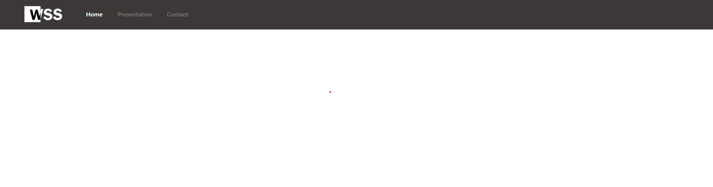

You are going to create a folder which will contain other folders: "css" (for stylesheets ), "js" (for JavaScript scripts ), "img" ( for images ) and finally "wss" ( for wss files ), we will create the "html" pages in the global folder.

You have to create a page, with the extension ".html", after that open it and start typing the essential elements : meta ( This will let you add preferences to your page, exemple : utf-8, description... ), title ( This is the title of your page, give it a short name ), link ( This will connect to your stylesheet... We will use this to connect WSS with your page just after this step )...

Now we are going to connect to the WSS library, to link the WSS CSS just copy and paste this line of code into your header or you can download the file and place it in the "wss" folder we created in step 1 and then connect it via your path.
<link href="https://software.webba-creative.com/wss/wss.css" rel="stylesheet">
After that we have to connect the Javascript of the WSS, it is enough as for the CSS to copy and paste this line of code but this time at the end of your body, or as before you can also download the file.
<script src="https://software.webba-creative.com/wss/js/wss.js"></script>
DownLoad this file and place its content in the "wss" folder
DownLoad
Copy-paste and modify this code into your head before your stylesheets :
<link href="[your path]wss/wss.css" rel="stylesheet">
Copy-paste and modify this code into your body at the end :
<script src="[your path]wss/js/wss.js"></script>
Let's place together your first NavBar, for a first we will choose the simplest of all, the black one with logo and menu on the left. How to place it? Super simple copy and paste this code into your body tag, you can delimit the area with comments.
<section class="navigation-complete-logo" id="nav-color-black">
<section class="container-lg">
<section class="navigation-container">
<section style="display: flex;align-items: center;"><section class="navItem"><a href="#"><img src="logo.png" alt="logo"></a></section>
<section class="navButton" id="navBtn" style="margin-left: auto;margin-right: 40px;"><a onclick="JavaScript:navMenu()"><img src="https://software.webba-creative.com/wss/icones/navPhone.png" style="width: 30px;height: auto;"></a></section></section>
<section id="links">
<section class="navItem"><a href="#"><span class="actual-nav-black"><h4>Home</h4></a></section>
<section class="navItem"><a href="#"><h4>Presentation</h4></a></section>
<section class="navItem"><a href="#"><h4>Contact</h4></a></section>
</section>
</section>
</section>
</section>
Of course you have to change the "logo.png" to your logo path.

Here we are, we have a NavBar but we don't have anything in the page! We're going to start with the header of the page (the upper part), we're going to create a container-lg (wide) and arrange some text to create this new area. Here is the presentation of the containers:
Small Container (50%)
<section class="container-sl">
Classic Container (80%)
<section class="container-cl">
Large Container (100%)
<section class="container-lg">


Then for the body of the page we are going to place medium articles, however we need a grid before that, that's why we are going to place it now.
<section class="grid-container"> <section class="grid-selector"> <p>Element 1</p> </section> <section class="grid-selector"> <p>Element 2</p> </section> <section class="grid-selector"> <p>Element 3</p> </section> </section>
Now that we have the grid we can place the items inside, here is the code for a medium article:
<section class="article medium-article" id="color-red" style="margin:auto;"> <img src="Image" alt="Image">
<h3>Titre</h3>
<p>Short description of the article</p>
<section class="btn_cl"><a href="#"><span>More</span><img class="icn" src="https://software.webba-creative.com/wss/icones/ESP-white.png"></a></section>
</section>


Now that you know how to make a simple site don't forget: it's the same principle for everything else so read the documentation and let your ideas do the rest.
Docs
Start :
Create your first "html" file >
Connection to the WSS library >
Placing elements :
Place Containers and arrange the header >
Place Articles inside the grid >
Your part :